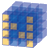
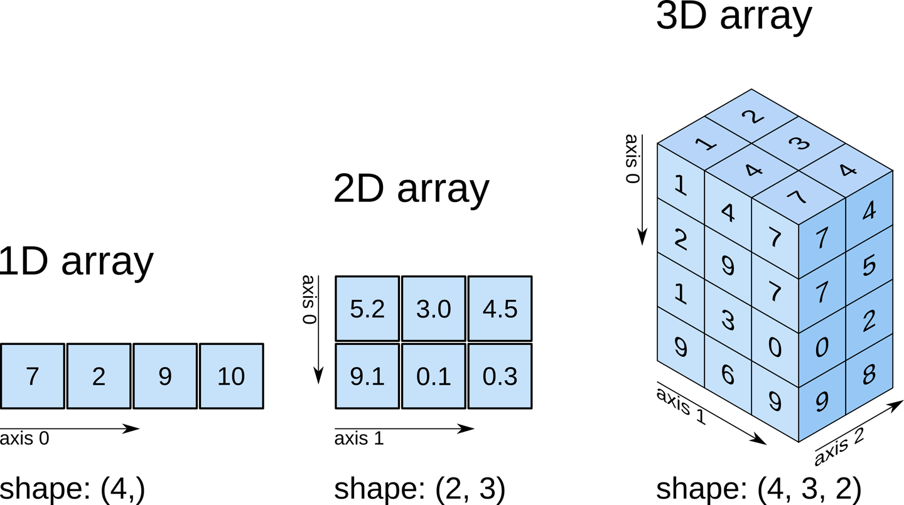
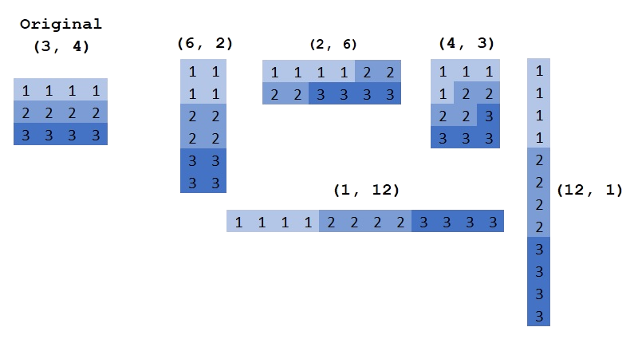
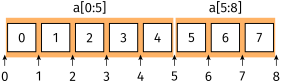
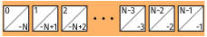
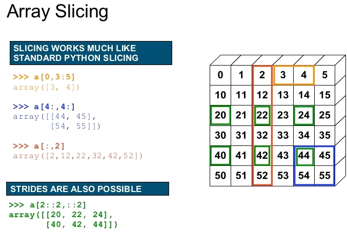
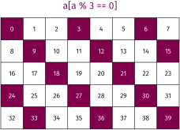
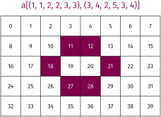
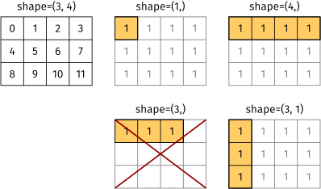
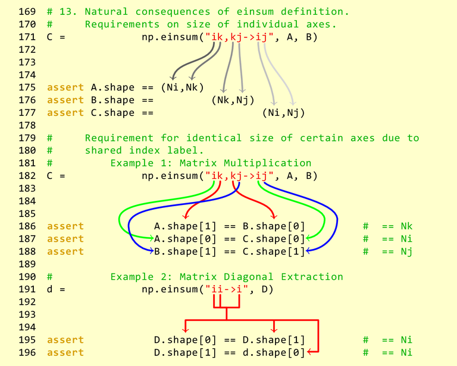

Numpy/SciPy¶
The stuff below is inspired from https://www.youtube.com/watch?v=8JfDAm9y_7s and https://github.com/gertingold/euroscipy-numpy-tutorial
|  |
NumPy Base N-dimensional array package |
 |
Matplotlib Comprehensive 2D Plotting |
|
SciPy library Fundamental library for scientific computing |
 |
Pandas Data structures & analysis |
What we want¶
- Work with vectors and matrices
- Support for linear algebra
- Fast and easy to program
- Fast execution
What is Numpy¶
- Core library for scientific computing in Python
- It is nearly impossible to find a scientific package in Python that does not depend on numpy
- Defines a multidimensional array object and the tools to work on them
- Linear algebra, DFT, random numbers, ...
- Has good documentation
 https://www.oreilly.com/library/view/elegant-scipy/9781491922927/ch01.html
Example: Import numpy and create a 3-dimensional array with the shape [4, 3, 2]
>>> import numpy as np
>>> a = np.zeros(shape=[4, 3, 2])
Datatypes (dtype)¶
- Integers:
np.int8,np.int16,np.int32,np.int64,np.uint8, ... - Float:
np.float16,np.float32,np.float64, . . . - Complex:
np.complex64(single precision),np.complex128(double precision), . . . - Boolean:
np.bool8 - default type:
np.float64
Python has buildin support for complex types:
>>> 1 + 1j
(1+1j)
Note: Numpy is not save against overflows (while python is):
>>> a = array([200], dtype=uint8)
>>> a
array([200], dtype=uint8)
>>> a + a # overflow
array([144], dtype=uint8)
>>> a + 200 # overflow
array([144], dtype=uint8)
>>> a + 300 # no overflow, because 300 is first converted to uint16
array([500], dtype=uint16)
Numpy vs python list¶
- Less memory
- Numpy has a dtype (datatype) for the elements (Store content as bytestream with a header that describes the content)
- The user do not to care over the implementation.
- Each list element can have a different type
- Numpy has a dtype (datatype) for the elements (Store content as bytestream with a header that describes the content)
- Faster
- Numpy functions (
np.sum,np.linalg.inv,np.fft.fft) are implemented in C/C++ (Blas, LAPACK, MKL, ...) - Python list has always the interpreter overhead
- Numpy functions (
- Easier to use for numerix problems
- Numpy supports matrix operations (
np.matmul,np.einsum)
- Numpy supports matrix operations (
Array creation¶
- Numerical ranges:
np.arange,np.linspace,np.logspace - Homogeneous data:
np.zeros,np.ones - Diagonal elements:
np.diag,np.eye - Random numbers:
np.random.rand,np.random.randint - From
list:np.array
Numpy has an append()-method like python lists.
Avoid it.
Use a python list with append and convert it with np.array
Numpy array properties¶
>>> a.shape # the shape of the array
(4, 3, 2)
>>> a.ndim # the number of dimensions of the array
3
>>> a.dtype # the dtype of the array
np.float64
>>> a.size # the number of elements
24
>>> len(a) # Note: len returns the length of the fist dimension to be compatible with python lists
4
>>> a.strides # Memory step that corresponds to an index increase
(48, 16, 8)
Strides are one reason for the efficiency of numpy.
Usually the user do not care about the strides.
The thing to remember from strides is, that some operations (e.g. np.transpose, slice) return a view to the original array with modified strides.
Inplace operations change then the original array.
Numpy array manipulations¶
Transpose¶
A transpose in numpy means array transpose and not matrix transpose
>>> a.shape
(4, 3, 2)
>>> b = a.T # array transpose
>>> b.shape
(2, 3, 4)
>>> a.transpose(0, 2, 1).shape
(4, 2, 3)
>>> np.swapaxes(a, -1, -2).shape # matrix transpose
(4, 2, 3)
Reshape¶
You can change the shape of an array with reshape. The memory layout stay and only the interpretation changes
>>> b = a.reshape(2, 8) # same as np.reshape(a, [2, 8])
 http://backtobazics.com/wp-content/uploads/2018/08/numpy-reshape-examples.jpg
Getitem: Slicing and indexing¶
In python the index starts with 0 like in C/C++ and not with 1 as in MATLAB. The syntax is: [start:stop:step].
Step is the last one and optional [start:stop]. Negative values are supported (e.g [::-1] reverses the order).
A value for start [:stop] and stop [start:] is also optional. Examples (1d):

https://github.com/gertingold/euroscipy-numpy-tutorial/tree/master/images
- Note: The last value is not included in slicing (e.g.
[:-1]mean drop the last element)
Negative indices for start and stop are also supported:

https://github.com/gertingold/euroscipy-numpy-tutorial/tree/master/images
Some 1d code examples:
>>> a = np.arange(5)
>>> a
array([0, 1, 2, 3, 4])
>>> a[0] # Index with a scalar
0
>>> a[:] # slice with a column, here all values
array([0, 1, 2, 3, 4])
>>> a[1:] # values from index 1 to the end
array([1, 2, 3, 4])
>>> a[:-1] # values from begin to the last, but exclude the last. Note negative indices are allowed
array([0, 1, 2, 3])
>>> a[::2] # Take each second value
array([0, 2, 4])
>>> start, end, step = 1, 4, 2
>>> a[start:end:step] # Use all of them (start, stop, step)
array([1, 3])
>>> a[...] # The "ellipsis" in getitem, see for eplanation below
array([0, 1, 2, 3, 4])
Ellipsis: The ellipsis (...) is a special argument to getitem ([ ]). It is used to handle an unknown number of dimensions. It means fill the getitem with so many colons (:) that on all dimensions an slicing/indexing is used.
Higher dimensional slicing with ellipsis:
>>> a = np.arange(4*3*2).reshape(4, 3, 2)
>>> a[..., 0] # equal to a[:, :, 0]
array([[ 0, 2, 4],
[ 6, 8, 10],
[12, 14, 16],
[18, 20, 22]])
>>> a[0, ..., 1] # equal to a[0, :, 1]
array([1, 3, 5])
>>> a = np.arange(4*3).reshape(4, 3)
>>> a
array([[ 0, 1, 2],
[ 3, 4, 5],
[ 6, 7, 8],
[ 9, 10, 11]])
>>> a[..., 0] # equal to a[:, 0]
array([0, 3, 6, 9])
>>> a[0, ..., 1] # equal to a[0, 1]
array(1)
and a visualisation  https://image.slidesharecdn.com/numpytalksiam-110305000848-phpapp01/95/numpy-talk-at-siam-14-728.jpg?cb=1299283822
Two advanced indexing examples. One with a boolean mask and the other one with an array of integers:
  https://github.com/gertingold/euroscipy-numpy-tutorial/tree/master/images
Basic operations¶
The np.ndarray in numpy has many methods to manipulate them (a.max(), a.sum(), a.reshape(), ...).
These have always a counterpart in the numpy namespace (np.max(a), np.sum(a), np.reshape(a), ...).
These functions will also work where a is compatible with numpy,
i.e. np.max(a) is equal to np.max(np.array(a)).
By default most numpy reduction functions perform the operation on the full array.
For example np.sum(a) returns the sum of all elements of a, independent of the numer of dimensions of a. To perform a operation on a specific dimension these functions have an axis argument:
>>> a = np.arange(4*3*2).reshape(4, 3, 2)
>>> a
array([[[ 0, 1],
[ 2, 3],
[ 4, 5]],
[[ 6, 7],
[ 8, 9],
[10, 11]],
[[12, 13],
[14, 15],
[16, 17]],
[[18, 19],
[20, 21],
[22, 23]]])
>>> np.sum(a)
276
>>> np.sum(a, axis=-1)
array([[ 1, 5, 9],
[13, 17, 21],
[25, 29, 33],
[37, 41, 45]])
>>> np.sum(a, axis=(-2, -1))
array([ 15, 51, 87, 123])
Some example operations:
>>> a = np.arange(5)
>>> a ** 2 # square, in python ** is the pow operator
array([ 0, 1, 4, 9, 16])
>>> a + a
array([0, 2, 4, 6, 8])
>>> a + 2
array([2, 3, 4, 5, 6])
>>> np.sqrt(a)
array([0. , 1. , 1.41421356, 1.73205081, 2. ])
and there are many more functions, for example (all of them are in the numpy namespace np):
- Trigonometric functions
sin,cos,tan,arcsin,arccos,arctan,hypot,arctan2,degrees,radians,unwrap,deg2rad,rad2deg
- Other special functions
i0,sinc
- Hyperbolic functions
sinh,cosh,tanh,arcsinh,arccosh,arctanh
- Rounding
around,round_,rint,fix,floor,ceil,trunc
- Floating point routines
signbit,copysign,frexp,ldexp
- Arithmetic operations
add,reciprocal,negative,multiply,divide,power,subtract,true_divide,floor_divide,fmod,mod,modf,remainder
- Sums, products, differences
prod,sum,nansum,cumprod,cumsum,diff,ediff1d,gradient,cross,trapz
- Handling complex numbers
angle,real,imag,conj
- Exponents and logarithms
exp,expm1,exp2,log,log10,log2,log1p,logaddexp,logaddexp2
- Miscellaneous
convolve,clip,sqrt,square,absolute,fabs,sign,maximum,minimum,fmax,fmin,nan_to_num,real_if_close,interp
- Matrix and vector products
dot,vdot,inner,outer,matmul,tensordot,einsum,linalg.matrix_power,kron
- Decompositions
linalg.cholesky,linalg.qr,linalg.svd
- Matrix eigenvalues
linalg.eig,linalg.eigh,linalg.eigvals,linalg.eigvalsh
- Norms and other numbers
linalg.norm,linalg.cond,linalg.det,linalg.matrix_rank,linalg.slogdet,trace
- Solving equations and inverting matrices
linalg.solve,linalg.tensorsolve,linalg.lstsq,linalg.inv,linalg.pinv,linalg.tensorinv
- Order statistics
amin,amax,nanmin,nanmax,ptp,percentile,nanpercentile
- Averages and variances
median,average,mean,std,var,nanmedian,nanmean,nanstd,nanvar
- Correlating
corrcoef,correlate,cov
- Histograms
histogram,histogram2d,histogramdd,bincount,digitize
- Sorting
sort,lexsort,argsort,msort,sort_complex,partition,argpartition
- Searching
argmax,nanargmax,argmin,nanargmin,argwhere,nonzero,flatnonzero,where,searchsorted,extract
- Counting
count_nonzero
- ...
https://github.com/gertingold/euroscipy-numpy-tutorial/
One often used operation is the matrix multiplication. For the matrix multiplication there are 3 ways to execute it:
np.matmul(A, b)is the recommented one (or the@operator)A @ Balternative syntax fornp.matmulnp.dot(A, b)similar tonp.matmulbut has difference broadcasting behaviours.- Note
A * Bis the elementwise multiplication
Basic broadcasting¶
By default the python operators (+, -, *, /, **) operate elementwise (except matrix multiplication @)
To work elementwise it is important that the shapes match.
At this position broadcasting is important.
It mean, when the shapes do not match, numpy try to match them with broadcasting.
Broadcasting rules:
- The arrays all have exactly the same shape.
- The arrays all have the same number of dimensions and the length of each dimension is either a common length or 1.
- The arrays that have too few dimensions can have their shapes prepended with a dimension of length 1 to satisfy property 2.
https://github.com/gertingold/euroscipy-numpy-tutorial/
 https://github.com/gertingold/euroscipy-numpy-tutorial/tree/master/images
Getitem: Insert singleton dimension¶
>>> a = np.array([1, 2, 3])
>>> b = np.array([5, 11])
>>> a[None, :].shape
(1, 3)
>>> b[:, np.newaxis].shape
(2, 1)
>>> a[None, :] + b[:, np.newaxis]
array([[ 6, 7, 8],
[12, 13, 14]])
Einsum¶
https://en.wikipedia.org/wiki/Einstein_notation
 https://obilaniu6266h16.wordpress.com/2016/02/04/einstein-summation-in-numpy/
Further information¶
- Numpy is a very well documented library
- do an online search for a function and you find a description with some toy exampls.
- When this introduction was not enough, there are many further online tutorials
- On stackoverflow are many examples for specific problems